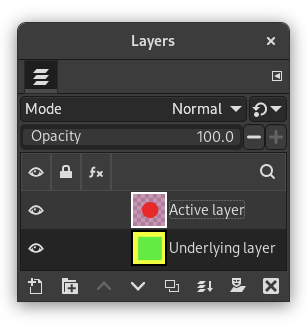
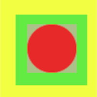
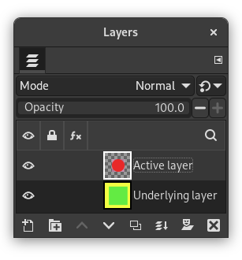

|

|
 |
| 7.56. Resize Layers to Selection |

|
8. O menu “Cores” |
The command automatically crops the selected layers, unlike the Crop Tool, or the Resize Layers to Selection command, which let you manually define the area to be cropped.
Este comando remove a maior área possível em torno da borda exterior que tem a mesma cor. Ela faz isso por varredura da camada ao longo de uma linha horizontal e uma linha vertical e corta a camada no ponto em que encontra uma cor diferente, seja qual for a sua transparência.
You can use this command to crop a layer to the dimensions of a subject that is lost in a solid background which is too large.
Figura 16.121. “Crop Layers to Content” example
Original image.

Layers of the original image.

Resulting image after applying “Crop Layers to Content”.

The active layer has been cropped to the size of the circle it contains. Its size is reduced, and the unoccupied part in the canvas is transparent, revealing the yellow and green colors of the underlying layer.